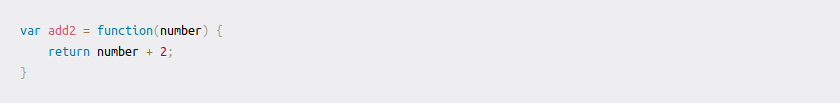
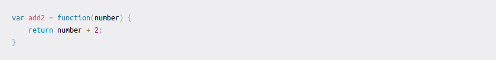

Table of Contents
retour au menu principal Index
Création et mise en évidence de blocs de code
Partager des échantillons de code avec des blocs de code clôturés et activer la coloration syntaxique.
Blocs de code clôturés
Vous pouvez créer des blocs de code clôturés en plaçant des triplets ``` avant et après le bloc de code. Nous vous recommandons de placer une ligne vierge avant et après les blocs de code pour faciliter la lecture du formatage brut.
```
function test() {
console.log("notice the blank line before this function?");
}
```
function test() {
console.log("notice the blank line before this function?");
Mise en évidence de la syntaxe
Vous pouvez ajouter un identifiant de langue facultatif pour activer la mise en évidence de la syntaxe dans votre bloc de code clôturé.
```ruby
require 'redcarpet'
markdown = Redcarpet.new("Hello World!")
puts markdown.to_html
```
require 'redcarpet'
markdown = Redcarpet.new("Hello World!")
puts markdown.to_html](./ressources/Markdown-Ruby.png)
```json
{
"firstName": "John",
"lastName": "Smith",
"age": 25
}
```
 ```js
var add2 = function(number) {
return number + 2;
}
```

```js
var add2 = function(number) {
return number + 2;
}
```

>Rem: Nous utilisons 'Linguist' pour effectuer la détection de la langue et sélectionner des grammaires tierces pour la coloration syntaxique.
Vous pouvez savoir quels mots clés sont valides dans le fichier YAML des langues.
liste complète des langages supportés
Cucumber ('*.feature')
abap ('*.abap')
ada ('*.adb', '*.ads', '*.ada')
ahk ('*.ahk', '*.ahkl')
apacheconf ('.htaccess', 'apache.conf', 'apache2.conf')
applescript ('*.applescript')
as ('*.as')
as3 ('*.as')
asy ('*.asy')
bash ('*.sh', '*.ksh', '*.bash', '*.ebuild', '*.eclass')
bat ('*.bat', '*.cmd')
befunge ('*.befunge')
blitzmax ('*.bmx')
boo ('*.boo')
brainfuck ('*.bf', '*.b')
c ('*.c', '*.h')
cfm ('*.cfm', '*.cfml', '*.cfc')
cheetah ('*.tmpl', '*.spt')
cl ('*.cl', '*.lisp', '*.el')
clojure ('*.clj', '*.cljs')
cmake ('*.cmake', 'CMakeLists.txt')
coffeescript ('*.coffee')
console ('*.sh-session')
control ('control')
cpp ('*.cpp', '*.hpp', '*.c++', '*.h++', '*.cc', '*.hh', '*.cxx', '*.hxx', '*.pde')
csharp ('*.cs')
css ('*.css')
cython ('*.pyx', '*.pxd', '*.pxi')
d ('*.d', '*.di')
delphi ('*.pas')
diff ('*.diff', '*.patch')
dpatch ('*.dpatch', '*.darcspatch')
duel ('*.duel', '*.jbst')
dylan ('*.dylan', '*.dyl')
erb ('*.erb')
erl ('*.erl-sh')
erlang ('*.erl', '*.hrl')
evoque ('*.evoque')
factor ('*.factor')
felix ('*.flx', '*.flxh')
fortran ('*.f', '*.f90')
gas ('*.s', '*.S')
genshi ('*.kid')
glsl ('*.vert', '*.frag', '*.geo')
gnuplot ('*.plot', '*.plt')
go ('*.go')
groff ('*.(1234567)', '*.man')
haml ('*.haml')
haskell ('*.hs')
html ('*.html', '*.htm', '*.xhtml', '*.xslt')
hx ('*.hx')
hybris ('*.hy', '*.hyb')
ini ('*.ini', '*.cfg')
io ('*.io')
ioke ('*.ik')
irc ('*.weechatlog')
jade ('*.jade')
java ('*.java')
js ('*.js')
jsp ('*.jsp')
lhs ('*.lhs')
llvm ('*.ll')
logtalk ('*.lgt')
lua ('*.lua', '*.wlua')
make ('*.mak', 'Makefile', 'makefile', 'Makefile.*', 'GNUmakefile')
mako ('*.mao')
maql ('*.maql')
mason ('*.mhtml', '*.mc', '*.mi', 'autohandler', 'dhandler')
markdown ('*.md')
modelica ('*.mo')
modula2 ('*.def', '*.mod')
moocode ('*.moo')
mupad ('*.mu')
mxml ('*.mxml')
myghty ('*.myt', 'autodelegate')
nasm ('*.asm', '*.ASM')
newspeak ('*.ns2')
objdump ('*.objdump')
objectivec ('*.m')
objectivej ('*.j')
ocaml ('*.ml', '*.mli', '*.mll', '*.mly')
ooc ('*.ooc')
perl ('*.pl', '*.pm')
php ('*.php', '*.php(345)')
postscript ('*.ps', '*.eps')
pot ('*.pot', '*.po')
pov ('*.pov', '*.inc')
prolog ('*.prolog', '*.pro', '*.pl')
properties ('*.properties')
protobuf ('*.proto')
py3tb ('*.py3tb')
pytb ('*.pytb')
python ('*.py', '*.pyw', '*.sc', 'SConstruct', 'SConscript', '*.tac')
rb ('*.rb', '*.rbw', 'Rakefile', '*.rake', '*.gemspec', '*.rbx', '*.duby')
rconsole ('*.Rout')
rebol ('*.r', '*.r3')
redcode ('*.cw')
rhtml ('*.rhtml')
rst ('*.rst', '*.rest')
sass ('*.sass')
scala ('*.scala')
scaml ('*.scaml')
scheme ('*.scm')
scss ('*.scss')
smalltalk ('*.st')
smarty ('*.tpl')
sourceslist ('sources.list')
splus ('*.S', '*.R')
sql ('*.sql')
sqlite3 ('*.sqlite3-console')
squidconf ('squid.conf')
ssp ('*.ssp')
tcl ('*.tcl')
tcsh ('*.tcsh', '*.csh')
tex ('*.tex', '*.aux', '*.toc')
text ('*.txt')
v ('*.v', '*.sv')
vala ('*.vala', '*.vapi')
vbnet ('*.vb', '*.bas')
velocity ('*.vm', '*.fhtml')
vim ('*.vim', '.vimrc')
xml ('*.xml', '*.xsl', '*.rss', '*.xslt', '*.xsd', '*.wsdl')
xquery ('*.xqy', '*.xquery')
xslt ('*.xsl', '*.xslt')
yaml ('*.yaml', '*.yml')
Lectures complémentaires
retour à Main